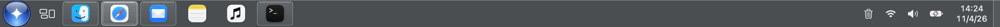
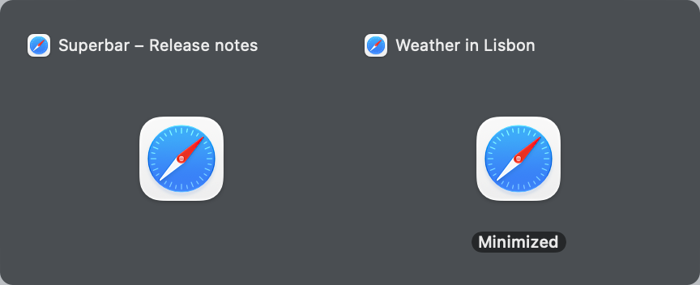
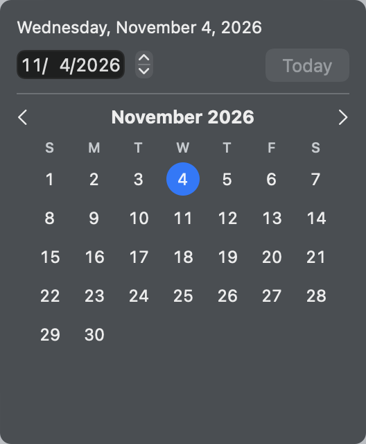
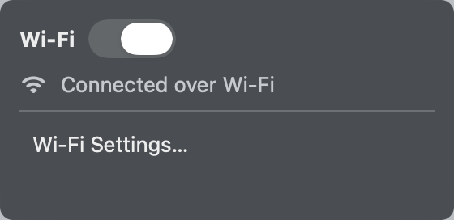
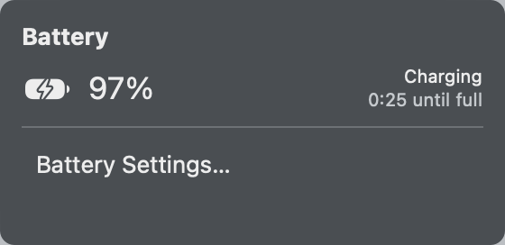
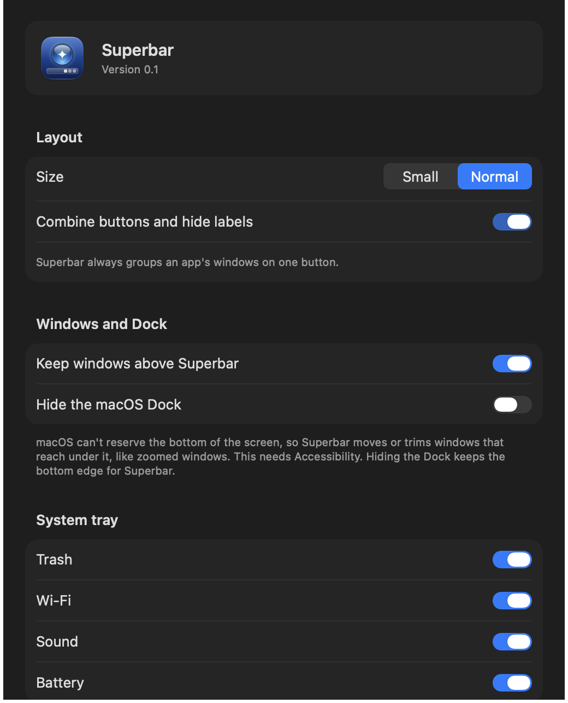

Superbar puts a glass bar along the bottom of every display: a Start menu that searches as you type, one button per app with live window previews, a tray, and a clock. If you came to the Mac from a PC, it will feel like home.
This is a working model of Superbar, running on the same rules as the app. Click the orb, an app, the clock, or the tray. Right-click a button. Hover one to see its windows.
Best on a larger screen. Apps and windows here are pretend; nothing leaves your browser.
Keyboard: Esc closes menus. In Start, type to search and press Return to open the top hit.
Features
Everything a taskbar should do.
Each one below has a small demo of exactly how it behaves.
One click does the right thing
Superbar decides what a click means from the app’s state at the moment you press: launch it, bring it forward, restore a minimized window, minimize the window you’re looking at, or show its windows so you can pick one.
Shift-click or middle-click opens a new window.
Right-click lists the app’s windows, plus Pin, Close, and Quit.
Drag a button to reorder your pins.
Try the rules
Open windows
Minimized
A click will
Bring its window to the front
Only the apps you’re using
Pinned apps always keep their button, even when they’re closed. Every other app gets a button only while it has a window open: an ordinary one, a minimized one, or one in full screen on another Space. Close its last window and the button goes.
A running app with no windows, like Finder with only the desktop, looks like a plain pin instead of a lit button.
Terminal isn’t pinned. Notes is.
Out of the way in full screen
When an app goes full screen, that display’s bar slides away. Rest the pointer on the bottom edge for a moment and it slides back up over the app, the way the Dock does. It stays while a menu or popover is open, then tucks away again.
Reveals after 0.2 s on the bottom edge.
Hides 0.6 s after the pointer leaves.
Each display decides on its own.
Hover the bottom edge of the screen
A full-screen app
The bar is showing.
Nothing hides behind the bar
macOS has no way for an app to reserve the bottom of the screen, so Superbar keeps windows clear of it. A window that reaches under the bar moves up if there’s room, or keeps its top and has its bottom trimmed, so a spreadsheet’s sheet tabs stay in view.
Dragging a window down is never fought: Superbar reacts only when a window opens or resizes, not when you move it.
Watch the window
Budget.xlsx
Sheet1Sheet2Totals
A bar on every display
Plug in a monitor and it gets its own bar, with the same apps and the same window counts. Hovering stays on the bar under your pointer. Start and the calendar open on the display you’re using, and previews open above the button you touched.
Two displays, one list
Built-in
External
Start, searched
Press the orb or ⌃⎋ and type. Names that start with what you typed come first, then word starts (“time” finds FaceTime), then anything that contains it. Return opens the top hit.
Window previews
Rest on a button and its windows appear as thumbnails, minimized ones marked. Click one to jump to it, or close it right there.
A tray that works
Turn Wi-Fi on or off, set the volume or mute, and check the battery and time left, each from a small popover. Hide any of them in Settings.
Clock and calendar
Click the clock for a month calendar. Type or step to any date, click a day to pick it, and press Today to come back.
Trash, without the Dock
A trash icon beside the tray opens Finder’s Trash, with Empty and Put Back. Hide the Dock and you lose nothing.
Mission Control and desktop
A button right after the orb opens Mission Control. The thin strip at the far right shows the desktop, and a second click brings your windows back.
Make it yours
Pick a normal or small bar, choose which tray icons show, set the Start shortcut, hide the macOS Dock (and restore it any time), and open Superbar at login. Changes apply at once.
These switches control the demo bar above.
Superbar Settings
Size
System tray
Screenshots
The real thing, on a Mac.
Taken by Superbar’s own snapshot mode. They follow your light or dark setting.

The bar, 40 pt tall, across the bottom of the screen.

Window previews

CalendarSound

Wi-Fi

Battery

Settings
Permissions
What it asks for, and why.
Superbar asks for each permission on its own and keeps working without it. Settings shows each one as On or Off, with a button to grant it.
Accessibility
Lists each app’s windows, and focuses, minimizes, closes, and moves them. Without it, buttons still switch apps, but there are no window counts, no picking a window, and no keeping windows above the bar.
Screen Recording
Draws the window thumbnails in previews and fills in some window titles. Without it, previews show the app icon instead.
Automation
Asks System Events to restart, shut down, or log out, so apps still offer to save your work. Asks Finder to open its Trash. Each is asked for the first time you use it.
Install
Build it in a minute.
You need a Mac on macOS 26 and Apple’s command line tools (Xcode works too). Clone the repository, then from its folder:
Install Apple’s command line tools, if you don’t have them:
xcode-select --install
Build Superbar, install it to ~/Applications, and open it:
./build.sh --open
Grant Accessibility when Superbar asks. Settings opens on the Permissions tab and each row turns On within a few seconds.
Optional: in Settings, turn on Hide the macOS Dock so the bottom edge belongs to Superbar. Restore Dock puts it back.